Metódusok alapjai projekt
Metódusok C#-ban.
A metódus szintaxisa
Metódusokhoz kapcsolódó alapfogalmak A metódus szintaxisa Egy metódus három fő részből áll: fejléc, törzs, és opcionálisan visszatérési érték.
A fejléc tartalmazza a metódus nevét, láthatóságát, visszatérési típusát és paramétereit. A törzs a kapcsos zárójelek között található utasításokat foglalja magában. Ha a metódus nem void típusú, akkor a törzsben kötelező return utasítást használni.
A metódus hívásának módjai
Metódust meghívni a nevével és a szükséges argumentumok megadásával lehet. Ha a metódus egy osztály példányához tartozik, a példányon keresztül hívjuk. Ha statikus, elegendő az osztálynév.
Egyszerű hívás – az eredményt eltároljuk:
int osszeg = Osszead(3, 5);
Console.WriteLine(osszeg); // 8


Metódustípusok
Eljárások (void metódusok)
Az eljárások olyan metódusok, amelyek nem adnak vissza értéket. Visszatérési típusuk void. Ezeket akkor használjuk, ha egy tevékenységet szeretnénk elvégeztetni – például kiírni valamit a képernyőre, módosítani egy listát, vagy naplózni egy eseményt –, de az eredményre nincs szükségünk visszatérési értékként.
Eljárás:
public static void Udvozles(string nev)
{
Console.WriteLine("Üdvözöllek, " + nev + "!");
}
Hívás:
Udvozles("Anna"); // Üdvözöllek, Anna!
Függvények (visszatérési értékkel rendelkező metódusok)
A függvények olyan metódusok, amelyek mindig visszaadnak egy értéket. A visszatérési típust a fejlécben kell megadni (int, string, bool, stb.), és a törzsben kötelező a return utasítás használata.
Egyszerű matematikai függvény:
public static int Negyzet(int szam)
{
return szam * szam;
}
Szöveget visszaadó függvény:
public static string TeljesNev(string vezeteknev, string keresztnev)
{
return vezeteknev + " " + keresztnev;
}
| Eljárás | Függvény |
| Visszatérési típusa void | Visszatérési típusa bármilyen lehet (int, string, bool, stb.) |
| A return utasítás nem kötelező | A return utasítás kötelező |
| Tevékenységet végez el, nem ad vissza eredményt | Kiszámít vagy előállít egy értéket, amit visszaad |
| Önállóan hívjuk, eredményt nem tárolunk | Kifejezésben vagy változóba mentve hívjuk |
| Példa: Udvozles("Anna") | Példa: int x = Negyzet(5) |